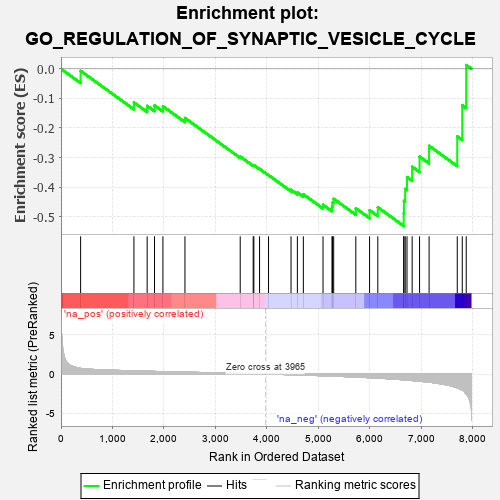
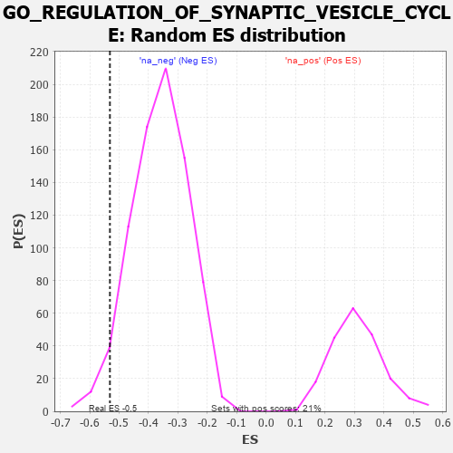

| | | Dataset | 7d |
| Phenotype | NoPhenotypeAvailable |
| Upregulated in class | na_neg |
| GeneSet | GO_REGULATION_OF_SYNAPTIC_VESICLE_CYCLE |
| Enrichment Score (ES) | -0.5313066 |
| Normalized Enrichment Score (NES) | -1.4711798 |
| Nominal p-value | 0.03652393 |
| FDR q-value | 0.2175067 |
| FWER p-Value | 1.0 |
Table: GSEA Results Summary

Fig 1: Enrichment plot: GO_REGULATION_OF_SYNAPTIC_VESICLE_CYCLE
Profile of the Running ES Score & Positions of GeneSet Members on the Rank Ordered List
| PROBE | GENE SYMBOL | GENE_TITLE | RANK IN GENE LIST | RANK METRIC SCORE | RUNNING ES | CORE ENRICHMENT | | 1 | PLD1 | | | 381 | 0.716 | -0.0068 | No |
| 2 | P2RY1 | | | 1416 | 0.407 | -0.1136 | No |
| 3 | BACE1 | | | 1673 | 0.360 | -0.1251 | No |
| 4 | FMR1 | | | 1816 | 0.334 | -0.1238 | No |
| 5 | BRSK2 | | | 1979 | 0.308 | -0.1265 | No |
| 6 | BTBD9 | | | 2407 | 0.245 | -0.1662 | No |
| 7 | CDK5 | | | 3480 | 0.080 | -0.2966 | No |
| 8 | SYT11 | | | 3732 | 0.036 | -0.3261 | No |
| 9 | HTR1B | | | 3745 | 0.035 | -0.3256 | No |
| 10 | DGKQ | | | 3856 | 0.020 | -0.3383 | No |
| 11 | TOR1A | | | 4030 | -0.013 | -0.3594 | No |
| 12 | LRRK2 | | | 4467 | -0.087 | -0.4092 | No |
| 13 | SYT4 | | | 4590 | -0.116 | -0.4179 | No |
| 14 | RAP1B | | | 4706 | -0.140 | -0.4243 | No |
| 15 | DRD2 | | | 5088 | -0.221 | -0.4596 | No |
| 16 | PTEN | | | 5262 | -0.261 | -0.4664 | No |
| 17 | RIMS2 | | | 5272 | -0.265 | -0.4522 | No |
| 18 | MAGI2 | | | 5295 | -0.269 | -0.4395 | No |
| 19 | DGKI | | | 5725 | -0.384 | -0.4714 | No |
| 20 | SYT9 | | | 5992 | -0.469 | -0.4780 | No |
| 21 | ROCK1 | | | 6152 | -0.520 | -0.4681 | No |
| 22 | RAB5A | | | 6655 | -0.741 | -0.4887 | Yes |
| 23 | VPS18 | | | 6659 | -0.743 | -0.4463 | Yes |
| 24 | CPLX1 | | | 6684 | -0.753 | -0.4060 | Yes |
| 25 | GSK3B | | | 6719 | -0.768 | -0.3661 | Yes |
| 26 | GIPC1 | | | 6819 | -0.826 | -0.3310 | Yes |
| 27 | DNM1L | | | 6963 | -0.913 | -0.2965 | Yes |
| 28 | SYT1 | | | 7148 | -1.033 | -0.2603 | Yes |
| 29 | ADCY1 | | | 7695 | -1.752 | -0.2283 | Yes |
| 30 | GRIK5 | | | 7792 | -2.044 | -0.1228 | Yes |
| 31 | CALM3 | | | 7869 | -2.525 | 0.0128 | Yes |
Table: GSEA details [plain text format]

Fig 2: GO_REGULATION_OF_SYNAPTIC_VESICLE_CYCLE: Random ES distribution
Gene set null distribution of ES for GO_REGULATION_OF_SYNAPTIC_VESICLE_CYCLE